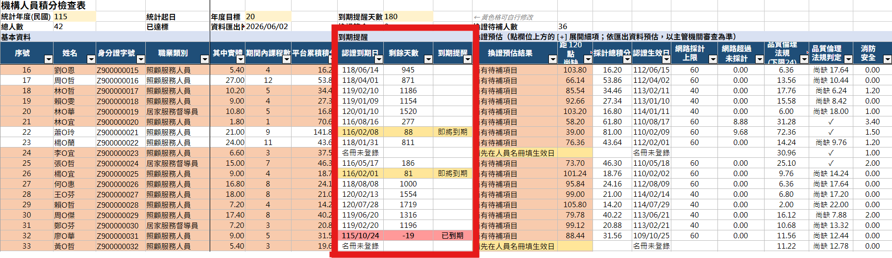
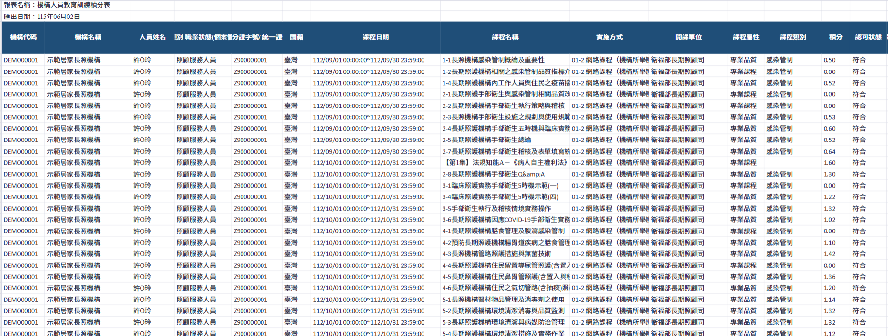
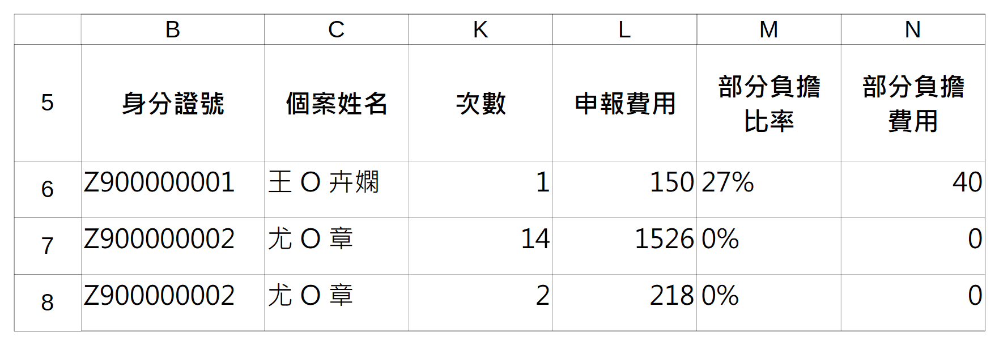
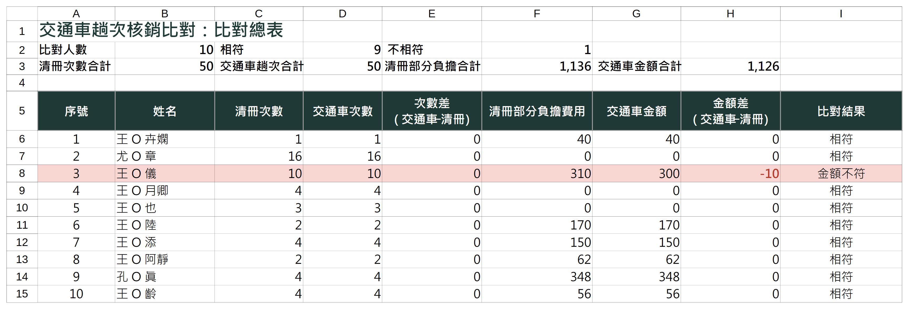
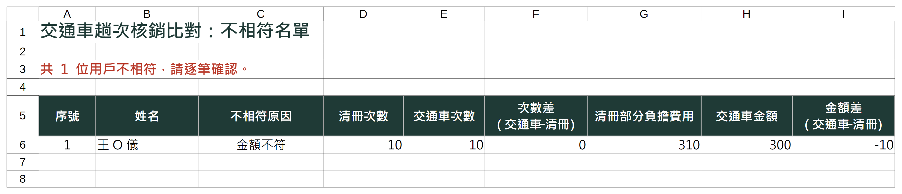

Excel × AI
長照行政課程
不用背函數，把資料和規則講清楚，
AI 寫公式，你負責驗算。
「年底要盤點全機構積分，
主管還問我：誰換證會有問題？」
例行報表
早有固定的樞紐與公式可以沿用，
大家都說不難。
偶爾才做的比對與盤點
每次都要重來，範本管不到。
今天就處理這一塊。
1
一套流程
交代清楚、一次做一步、驗算修正。換一份資料也能照做。
2
兩個案例
年度積分與到期提醒；交通車趟次核銷比對。
1
一份完整版檢查表
課後贈品。空白版貼上自己的資料就能用。
Excel × AI 長照行政課程
04 / 27
紅色：年度進度落後
今年積分未達機構自訂的進度參考
換證預估僅供參考，最終以平台及主管機關審查為準。

03
合作方式
一次一步，給公式讓我自己貼，等我說好了再繼續
04
已知答案
一兩個自己算得出來的結果，用來驗算
三步流程
① 交代清楚
→
② 一次做一步
→
③ 驗算修正
可以給 AI
- 欄位名稱與資料格式
- 虛構的示範資料（姓名中間字以 O 遮蔽、Z9 開頭的虛構編號）
- 白話寫成的規則
不給 AI
- 真實姓名、身分證字號
- 含真實個資的檔案
- 拍到真實個資的截圖
真實資料最後才貼進自己的 Excel。公式在你的電腦裡算，資料不必離開機構。
Excel × AI 長照行政課程
07 / 27
「合作方式」可以照這樣打👉
2
資料
哪張工作表、哪一欄是什麼、內容長什麼樣子
我要在 Excel 做一張「換證檢核」表，請你一步一步帶我完成。
# 我要的成果
- 我把平台匯出的積分表貼進「貼上區」工作表，檢核結果就自動更新。
- 請給我公式讓我自己貼，不要直接幫我算出結果。
- 我用舊版 Excel，不要用 XLOOKUP、FILTER、LET、UNIQUE。
- 可以用輔助欄，寧可多幾欄，不要一條很長的公式。
# 資料（附檔為去識別化資料）
- 「貼上區」資料從第 4 列開始：E 身分證字號、G 課程日期、
I 實施方式、K 課程屬性、L 課程類別、M 積分、N 認可狀態
- 課程日期是民國年文字，積分也是文字，例如 0.50
- 「人員名冊」：B 身分證字號、C 認證生效日（例如 112/09/01）
# 換證規則（節錄）
- 只算認可狀態為「符合」且積分大於 0 的課，課程日期取起日
- 採計總積分達 120 點
- 品質＋倫理＋法規合計至少 24 點，超過 36 點只採計 36 點
- 四大核心各至少 1 點，且合計至少 10 點
- 網路課程依認證生效日有採計上限
- 到期日＝生效日加 6 年減 1 天
（其餘規則同樣一行一條列在這裡）
# 第一件事
先不要給公式。請列出你打算怎麼做：需要哪些工作表、哪些輔助欄、分成幾個步驟。我確認後再開始。
Excel × AI 長照行政課程
08 / 27

另一份是各單位自建的「人員名冊」：姓名、身分證字號、認證生效日。
原始報表的四個特點
4
積分看起來是數字，其實是文字；認可狀態不一定是「符合」
要變成：第 4 張的人員總表，一人一列。
1
只算認可狀態「符合」且積分大於 0 的課；課程日期取起日。
3
品質＋倫理＋法規合計至少 24 點；超過 36 點只採計 36 點。
4
四大核心（消防安全、緊急應變、感染管制、性別敏感度）各至少 1 點，合計至少 10 點。
5
網路課程有採計上限，依認證生效日是 60、40 或 80 點。
這六條就是起手式「# 換證規則」那一段。課堂版先不處理文化課程，完整規則放在課後的完整版檢查表。
Excel × AI 長照行政課程
10 / 27

看規劃時確認
- 步驟順序跟你的規則對得上
- 沒有用到舊版沒有的函數
- 是一步一步來，不是一次全給
沒問題就回這一句
規劃可以，請從第一步開始。
步驟 1 課程日期取起日
「貼上區」工作表的 G 欄是課程日期，內容是文字，長這樣：
112/09/01 00:00:00~112/09/30 23:59:00
前面的 112 是民國年。我想在 Q4 取出開始那一天，變成 Excel 的日期。
例如上面這筆要變成 2023/9/1。
AI 回了什麼：一條公式，把 112 加 1911 換成西元年，再組成日期。
驗算｜Q4 應該是 2023/9/1
步驟 2 只算符合的課，文字轉數字
「貼上區」M 欄是積分，是文字格式，例如 0.50。N 欄是認可狀態。
請在 R4 顯示：認可狀態是「符合」就把積分變成數字，其他一律是 0。
AI 回了什麼：一條公式，「符合」的課才把積分轉成數字，其他都給 0。
驗算｜R4、R5、R6 應該是 0.5、0、0.52
Excel × AI 長照行政課程
11 / 27
我怎麼問｜第一問：三種課加起來
「貼上區」E 欄是身分證字號，K 欄是課程屬性，R 欄是有效積分。
「人員總表」C 欄是身分證字號。
我想在人員總表 V6 算出這個人「專業品質、專業倫理、專業法規」三種課的有效積分合計。
例如 Z900000001 應該是 70.57。
我怎麼問｜第二問：夠不夠 24 點
V6 是品質倫理法規合計。我想在 W6 顯示：滿 24 點就顯示「✓」，不到就顯示「尚缺」和還差幾點。
拿到回答後：先對 Z900000001 是不是 70.57。最常見的錯是只加到其中一種課。
驗算：合計與判定
超過 36 點只採計 36 點。Z900000001 的 70.57 點，到步驟 6 算總積分時只會算 36。
我怎麼問｜第一問：一科一欄
「貼上區」L 欄是課程類別。四大核心是：消防安全、緊急應變、感染管制、性別敏感度。
我想在人員總表 X6、Y6、Z6、AA6 分別算出這個人這四種課的有效積分合計，請一次給我一欄。
例如 Z900000001 的感染管制應該是 30.79。
我怎麼問｜第二問：合計與判定
AB6 是四科合計。我想在 AC6 顯示：有哪一科不到 1 點，就列出缺哪幾科；四科都有但合計不到 10 點，就顯示還差幾點；都符合顯示「✓」。
拿到回答後：用右邊三位對三種結果，三種都對了才算完成。
驗算：三種結果
Z900000001 四科是 1、1、30.79、0。感染管制修了很多，性別敏感度卻一點都沒有。
「人員名冊」C 欄是認證生效日，是民國年文字，例如 112/09/01。
請在 E4 算出到期日：生效日加 6 年再減 1 天。例如 112/09/01 要變成 2029/8/31。
「人員名冊」B 欄是身分證字號，C 欄是認證生效日，資料在第 4 到 303 列。
我想在人員總表 S6 用 C6 的身分證字號找到這個人的生效日，找不到就顯示「名冊未登錄」。
S6 是民國年文字的生效日。我想在 T6 顯示網路課程上限：112/10/12 以前是 60，112/10/13 到 115/06/30 是 40，115/07/01 起是 80。S6 是「名冊未登錄」就留空白。
這就是 VLOOKUP。
是 AI 寫的，不是你背的。
驗算
名冊第 4 列
112/02/13 → 118/02/12
Z900000001
112/02/13 上限 60
Z900000002
114/06/09 上限 40
拿到回答後：找不到的人要顯示「名冊未登錄」，不是錯誤訊息。
我怎麼問｜第一問：公式會很長，請 AI 先拆輔助欄
人員總表 R6 要算「採計總積分」：這個人全部的有效積分，先扣掉品質倫理法規超過 36 點的部分，再扣掉網路課程超過 T6 上限的部分。
請先告訴我需要哪些輔助欄，一次給我一欄。
例如 Z900000001 應該是 69。
我怎麼問｜第二問：還缺幾點
R6 是採計總積分。我想在 Q6 顯示距離 120 點還缺幾點，已經超過就顯示 0。
拿到回答後：先看 AI 打算拆哪幾欄，同意了再一欄一欄拿。最後對 Z900000001 是不是 69。
驗算：Z900000001
品質倫理法規 70.57，只採計 36
−34.57
全部加起來是 109.53，採計後只有 69。這是預估，最終以平台及主管機關審查為準。
| 狀況 | 貼回去的話 |
|---|
| 公式出現錯誤訊息 | 「R4 出現 #VALUE!。它參照的 M4 內容是 0.50，靠左對齊。」 |
| 沒報錯但數字不對 | 「Z900000001 的品質倫理法規應該是 70.57，我得到的數字不一樣。」 |
| Excel 不認得某個函數 | 「我的 Excel 沒有這個函數，請改用舊版也能跑的寫法。」 |
| 公式太長 | 「請拆成兩到三個輔助欄，每欄只做一件事。」 |
| 對話太長 | 「請整理目前進度，我要貼到新對話接續。」 |
也可以直接貼截圖。截圖要含欄名列號，且不得出現真實個資。
常見例子：跳過步驟 2 直接加總 M 欄，公式不報錯，結果卻是 0。
AI 會錯，
而且不會報錯。
做法：挑兩三位你已經知道答案的同仁，逐一對照。
分工：AI 寫公式，你負責驗算。對了才貼上真實資料。
照顧組合服務費用項目清冊
平台匯出。同一位個案可能有好幾列，次數要加總。
交通車系統資料
交通車系統匯出。一趟一列，次數要用數的。
→
要做出來的表
不相符名單
- 每位用戶的次數是否相同
- 每位用戶的金額是否相同
- 只列出對不上的人
Excel × AI 長照行政課程
19 / 27
提問原文（姓名已遮蔽，另附兩份檔案）
# 目標
交通車趟次核銷比對
# 流程
1. 清冊擷取 C 欄姓名、K 欄次數、N 欄部分負擔費用。同一個姓名會有多筆紀錄，要把 K 欄次數合併計數。如圖一尤O章，K 欄分別有 14 次、2 次，加總後是 16 次。
2. 交通車系統資料取 B 欄姓名、K 欄金額。次數是計數 B 欄相同姓名的次數，並針對該用戶加總金額。
3. 把兩份結果比對金額以及次數是否相同，在另一張表產出不相符的用戶名。
圖一：清冊裡同一人有兩列（示範資料）

資料：有。兩份匯出檔，講明哪一欄是什麼
規則：有。三條，一行一條
已知答案：有。尤O章應該是 16 次
合作方式：這次沒寫。AI 一次做完整份工具
1
交通車資料的姓名後面多了「★」
直接比會全部對不上，要先去掉
2
兩份檔案的標題列位置不同
清冊在第 5 列，交通車在第 1 列
3
交通車資料沒有身分證號
只能用姓名比，同名同姓會被合併
4
「搭乘狀況」這次全部是「完成」
若有取消的趟次，規則要再補一條
你寫的規則只涵蓋你想得到的情況。資料裡的意外，要請 AI 回報，再由你決定怎麼處理。

貼上區只貼不改。下個月換資料，整張蓋掉就好。
公式放在別張表。貼資料不會把公式蓋掉。
只用舊版函數。舊版 Excel 也能開。
一、已知答案
尤O章：14 + 2 = 16 次
交通車資料也數到 16 列，結果是「相符」。
二、總數
兩邊各 50 趟，共 10 位
總數對得上，代表沒有漏算或重複算的列。
三、結果合不合理
9 位相符，1 位金額不符
王O儀：次數都是 10，金額 310 對 300，差 10 元。

用欄位位置
「K 欄，第 6 列開始」
- 公式短，好懂，好教
- 匯出格式不變就一直能用
- 版面一變會抓到別欄，而且不會報錯
用項目名稱
「標題叫『次數』的那一欄」
- 欄位順序變了也對得上
- 公式比較長
- 標題改名或含換行會找不到，但會直接顯示錯誤
我們的工具用的是位置：清冊的 C、K、N 欄，交通車的 B、K 欄。它不會去讀標題文字。
匯出格式固定，每個月都是同一種報表
用位置，再加一格標題檢查
拿到公式後，追問這一句
你的公式是用欄位位置，還是用標題名稱來找資料？
如果匯出檔多了一欄，結果會怎樣？
標題檢查是什麼
確認 K5 還是「次數」、N5 還是「部分負擔費用」。不是就顯示警告，先別相信結果。
共通點：偶爾才做、每次都要重來的加總、查找與比對。
Excel × AI 長照行政課程
26 / 27
第一步
交代清楚
去識別化資料、條列規則、合作方式
第二步
一次做一步
AI 先給規劃，確認後逐步給公式
課後贈品
機構免費長照積分分析乙次！
含年度積分、積分落點分析以及換證預估。
【待填】贈品領取方式、報名與聯絡資訊
Excel × AI 長照行政課程
27 / 27